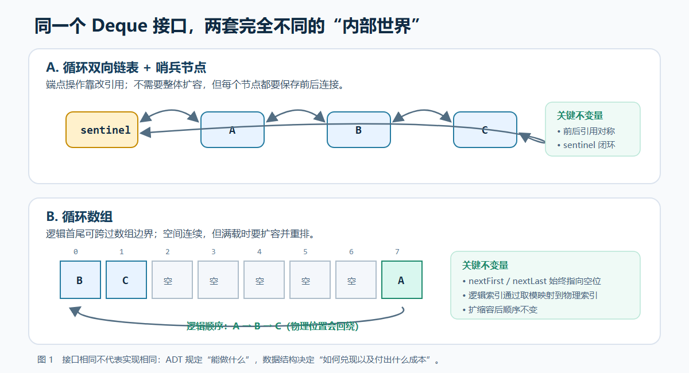
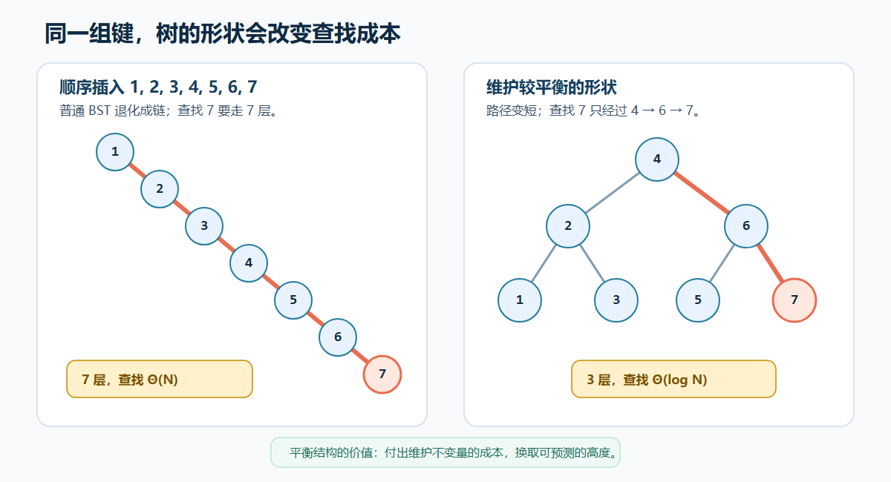
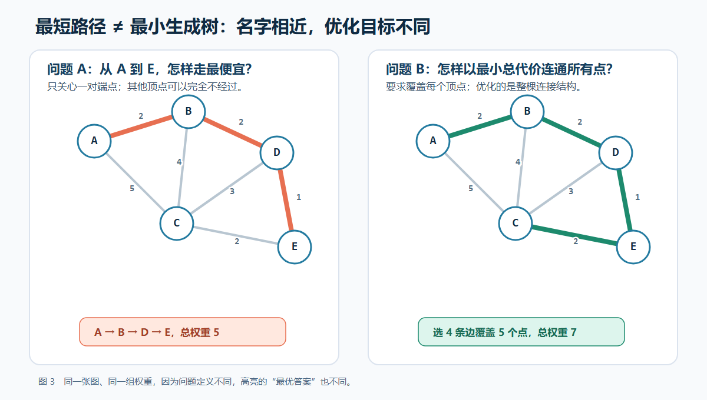
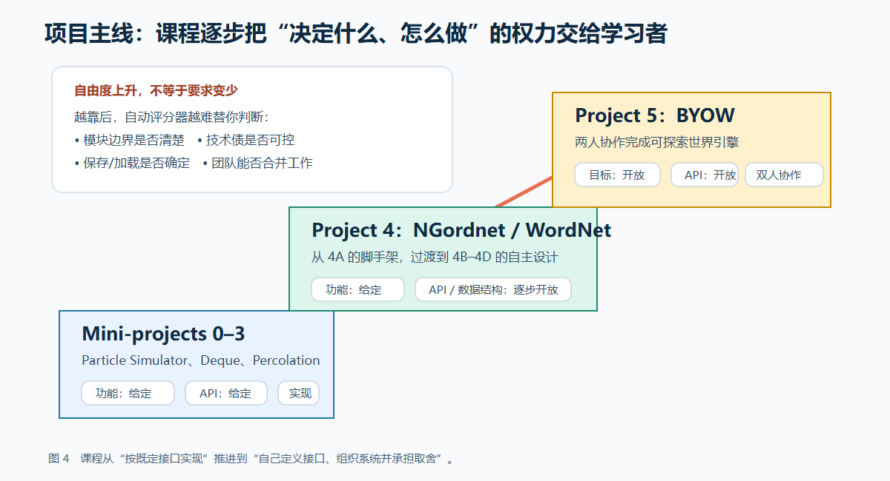

摘要
CS61B 常被简化为“用 Java 学数据结构”，甚至被等同于算法题训练。然而，课程的公开材料呈现出更完整的目标：它一方面讨论程序运行的效率，另一方面讨论程序设计与演化的效率。本文以 UC Berkeley CS61B Spring 2026 的课程政策、日历、项目说明与教材为事实骨架，并参考 B 站上的双语字幕和中文配音整理，从几个具体场景展开：为什么同一个 Deque 接口会需要两种完全不同的实现？为什么一棵搜索树会悄悄退化成链表？为什么最短路径与最小生成树不能混用？又为什么后期项目不再把 API 全部写好？这些问题共同指向一项比记忆模板更重要的能力：根据需求选择表示、算法与边界，说明它牺牲了什么，并用测试和分析验证承诺。
关键词： CS61B；抽象数据类型；数据结构；算法分析；测试；软件工程
资料范围：截至 2026 年 8 月 23 日，Berkeley 已列出 Fall 2026 的授课时间与教师，但官方课程入口尚未提供可完整核验的 Fall 2026 教学站点。因此，本文以 Spring 2026 的完整公开课程站为主要依据。B 站材料来自 2021、页面标注“2024”的整理版和 Fall 2025 配音版，只用于补充中文观看路径，不用于证明当前项目或政策。本文不包含项目答案。
引子：addLast 为什么会把整个设计暴露出来？
假设要实现一个双端队列，规格里只有一句看上去很普通的话：从尾部加入一个元素。若底层是链表，addLast 意味着创建节点、改动两侧引用，并确保哨兵仍然闭环；若底层是循环数组，它意味着计算物理索引、处理首尾回绕，并在空间不足时扩容。调用者看到的是同一个方法名，维护者面对的却是两套完全不同的状态机器。
更麻烦的是，错误未必在调用发生时暴露。某次扩容把顺序复制错了一位，队列可能继续通过若干简单测试，直到多次首尾交替操作后才返回错误元素。问题表面发生在 removeFirst，根源却是更早之前的不变量已经被破坏。
这正是 CS61B 与普通“语法入门”的分界点：一行方法调用背后同时存在接口承诺、数据表示、更新规则、复杂度和测试策略。课程不满足于让程序“眼下能跑”，而是持续追问它为什么正确、在什么规模下仍然可用、修改以后还能否保持正确。
一、“CS61B 等于 Java 加算法题”是一个错误前提
看到课程名称 Data Structures，人们很容易想象一张需要背诵的清单：链表、树、堆、哈希表、图；再加上一些复杂度公式和若干 Java 模板。这样的概括没有完全错，却漏掉了课程最重要的连接部分——如何根据问题约束，在多种结构与算法之间作出选择，并让选择在程序扩大后仍然成立。
Spring 2026 的官方政策把 CS61B 描述为一门关于数据结构与编程方法的课程，并明确说明它虽然教授 Java，却不是一门穷尽 Java、Android、用户界面或图形开发的课程。相较于 CS61A 提供的高层问题组织方式，CS61B 更关注“写程序的效率”，即设计，也关注“运行程序的效率”，即运行成本。CS61B Spring 2026 Policies
Berkeley 课程目录给出的范围包括动态数据结构、数组、字符串、哈希表、存储管理、抽象数据类型、排序与搜索算法，以及初步的软件工程原则；正式先修为 CS61A、CS88 或 E7。Berkeley EECS CS61B 课程目录
因此，Java 是表达和检验这些思想的媒介，不是课程终点；算法题只是局部推理的一种练习，也不能代表完整目标。课程真正推进的问题是：一个程序怎样从“在示例输入上能运行”，变为“接口清楚、成本可预测、边界可测试、修改可承受”？
二、从 CS61A 到 CS61B：抽象开始承担成本
CS61A 让学习者看到，计算过程可以用函数组织，状态和行为可以用对象组织，语言规则也可以由解释器实现。到了 CS61B，抽象并未退场；相反，它开始接受更严格的追问：这个抽象的底层是什么？每个操作要付出多少时间和空间？当数据规模增长时，原来的选择还成立吗？当需求变化时，哪些模块必须被修改？
可以用一条链条概括这种变化：
问题需求 → ADT/API → 数据表示 → 算法 → 成本分析 → 测试验证 → 系统集成
这条链上的每一步都约束下一步。需求决定接口需要承诺哪些操作；接口不能直接决定实现，却会影响可选的表示；表示使某些操作便宜、另一些操作昂贵；算法的正确性和复杂度还要通过测试与测量检查；进入较大项目后，任何局部选择都会影响模块耦合与维护成本。
因此，CS61B 并不是从“理论”突然跳到“刷题”，而是从构造抽象进一步走向检验抽象。一个漂亮的接口如果只能依靠低效实现兑现，它的价值会受限；一个渐近复杂度优秀的算法如果让代码难以理解和修改，也未必是当前场景的最好方案。
Java 的静态类型在这里并非背景语法。接口变量可以引用不同实现对象，编译期类型决定哪些操作可见，运行期类型决定实际调用哪个重写方法；泛型把“能装什么”变成可由编译器检查的约束；equals、hashCode 与迭代器协议又让自定义结构进入 Java 的通用生态。很多初学者觉得这些规则只是繁琐，直到同一个 Deque<T> 接口真的承载链表与数组实现，才会看到类型系统在帮助程序隔离“使用方式”和“存储方式”。
引用语义则是另一道必须补齐的地基。把对象变量赋给另一个变量，复制的是引用，不是对象本身；数组里保存对象时，数组格子同样保存引用。链表节点断开后是否仍可达、扩容后旧数组能否被回收、equals 比较内容还是身份，都与这套模型相关。CS61A 的环境图在这里没有失效，只是问题从“名字在哪个帧查找”进一步转向“对象图怎样连接、谁仍持有引用”。
三、ADT 与实现：同一种行为，可以有不同代价
抽象数据类型（ADT）描述对象允许进行哪些操作，而数据结构描述这些操作如何被实现。两者的分离是 CS61B 最基础、也最容易被低估的思想。
以双端队列为例，接口可以承诺从两端添加、删除和查看元素。它既可以由链式节点实现，也可以由循环数组实现。只看外部行为，两种实现可能完全一致；进入内部以后，它们面对的是不同问题：链式结构需要维护节点连接和边界哨兵，数组结构需要管理首尾索引、容量与扩缩容。

这并不意味着其中一种天然更好。链式表示通常不需要整体扩容，但每个节点会承担引用与对象管理成本；数组表示具有连续存储的优势，却要处理容量变化和索引回绕。真正的选择取决于操作频率、数据规模、内存约束、局部性和实现复杂度。
Spring 2026 的课程顺序正体现了这种比较：从列表、数组、引用与递归进入单链表、双链表、哨兵节点、循环数组，随后讨论接口、继承、迭代器和多态。Spring 2026 课程日历 前期的 LinkedListDeque 与 ArrayDeque 让学习者在同一类外部行为下实现不同的底层表示，并逐步减少脚手架。
学习一种结构时，仅记住示意图远远不够，至少需要回答五个问题：
- 它向调用者承诺哪些操作？
- 内部如何表示状态？
- 哪些表示不变量必须始终为真？
- 每个操作的最坏、平均或摊销成本如何？
- 哪些边界案例最容易破坏不变量？
不变量是接口与实现之间的隐形合同。比如，循环数组的逻辑顺序必须与物理索引映射一致；树节点的排序关系必须在插入后继续成立；哈希结构必须正确处理冲突和扩容。程序的许多错误，并非某一行语法写错，而是一次更新破坏了不变量，问题直到后续操作才显现。
循环数组还能引出摊销分析。一次扩容通常需要复制所有元素，单看这次操作是线性的；如果容量按常数倍增长，昂贵复制不会在每次插入时发生，一长串插入的平均成本仍可保持常数级。这里的“平均”不是对随机输入求概率平均，而是把一系列操作的总成本摊回每次操作。若每次只多开一个格子，复制会频繁发生，长期成本便完全不同。扩容策略因此不是实现细节里的小偏好，而是接口性能承诺能否成立的条件。
学习图 1 时可以做一个很实用的纸笔实验：从容量 8 的数组开始，交替执行 addFirst、addLast、removeFirst，每一步都写出 size、逻辑首元素和两个端点索引。只要其中一个索引的语义说不清，代码里就很容易出现 off-by-one。先定义“索引指向元素还是空位”，往往比先写取模表达式更重要。
四、渐近分析：把性能从事后感受变成事前推理
只凭小样本运行速度判断结构，通常会得出不可靠的结论。当输入只有几十个元素时，线性扫描可能与哈希查找一样快；当规模增长几个数量级后，两者的趋势才会显现。渐近分析的作用，是在完整实现和大规模测量之前，先判断增长方式是否可接受。
Spring 2026 课程先引入渐近分析，穿插并查集后继续完成进一步分析，再进入搜索树、B 树、红黑树、堆与优先队列、图遍历、最短路径、最小生成树、哈希、Trie 和排序。Spring 2026 课程日历 这不是一堆互不相关的结构，而是围绕不同操作需求形成的设计空间：
| 问题中的主要需求 | 常见候选结构或算法 | 必须继续追问的条件 |
|---|---|---|
| 动态维护连通关系 | 并查集 | 查询与合并的比例如何？ |
| 有序查找与更新 | 平衡搜索树 | 是否需要顺序遍历或范围查询？ |
| 反复取得最高优先级元素 | 堆、优先队列 | 是否还需要快速查找任意元素？ |
| 快速键值查询 | 哈希表 | 哈希质量、装载因子与冲突策略如何？ |
| 前缀检索 | Trie | 字符集大小与内存成本能否接受？ |
| 网络中的可达性或路径 | 图遍历、最短路算法 | 图是否有权、有向，边权能否为负？ |
复杂度不是装饰在答案末尾的标签，而应在设计之前发挥作用。技术设计文档若先明确数据规模、操作分布和复杂度目标，许多错误方案就能在编码前排除。Spring 2026 的 Wordnet 设计任务也明确要求说明数据、数据结构、算法、预期时间与空间复杂度，以及它们之间的关系图。Project 4B: Wordnet Design
然而，大 O 不是性能的全部。它会有意忽略常数因素，也不直接反映缓存局部性、对象分配、输入分布、并行性和实现质量。更重要的是，它不衡量开发时间与维护成本。对于规模很小、很少执行的功能，一种理论上增长更慢但代码复杂得多的方案，可能反而提高总体成本。因此，正确方法是用复杂度筛选不可行方案，再用真实约束和测量完成判断。
并查集是这一思想的好例子。最直观的实现可以让每个元素直接保存所属集合编号，查询很快，合并却可能扫描整个数组；树形表示把集合组织为父指针，合并根节点更便宜，但树可能越来越高。按规模合并与路径压缩继续改变树的形状，使一长串操作的摊销成本接近常数。学习者真正需要理解的不是背出一个极慢增长的函数名称，而是每个优化分别修改了哪个不变量、减少了哪类重复工作。
Percolation 又把抽象拉回具体世界：一个网格位置是否与顶部连通，可以映射为动态连通性问题。但把二维坐标映射成一维编号、处理虚拟节点，并避免 backwash 现象，才是建模最容易出错的地方。数据结构只解决“连通关系怎样维护”；哪些节点应该连接、什么状态代表渗流，仍要由问题模型决定。
五、树、图与哈希：数据结构是问题模型，不是代码模板
学习数据结构最常见的偏差，是把结构当作待默写的类定义。实际上，结构首先是一种对问题关系的建模。
树适合表达层次、排序或递归分割，但普通二叉搜索树的形状受插入顺序影响，极端情况下会退化。B 树通过多路节点与分裂、合并维持平衡；红黑树通过颜色约束与旋转保持与 2-3 树的对应。两者都用结构不变量换取更可预测的操作成本。堆则放弃完整排序，只维护足够支持优先级操作的局部关系。这些差异说明：数据结构的能力来自它维护了哪些不变量，也来自它有意不维护什么。

图 2 也解释了为什么“BST 查找是 O(log N)”并不是无条件真理。普通 BST 的成本取决于高度，而高度取决于形状；只有随机性假设或平衡不变量提供额外保证时，对数结论才成立。红黑树的颜色和旋转并非装饰，它们是在更新时主动修复形状。B 树则通过多路节点和分裂/合并减少高度，尤其适合一次访问成本很高的分层存储。两者都追求可预测高度，却不是同一种机制。
图进一步打破线性和层次结构的限制。深度优先与广度优先不是两段孤立模板，而是不同的探索顺序；最短路径和最小生成树名称相近，优化目标却不同。把它们混用，根源往往不是代码不会写，而是没有先定义问题：要优化一条从源点出发的路径，还是要用最小总代价连接全部顶点？

广度优先搜索可在无权图中得到最少边数的路径；Dijkstra 依赖非负边权，并用优先队列不断确定当前最便宜的未完成顶点；A* 再加入启发式估计以改变探索次序。最小生成树的 Prim 与 Kruskal 则在解决另一类问题。算法选择必须与输入条件配套：若边权可以为负，直接套 Dijkstra 模板，即使代码通过若干样例，也没有正确性保证。
哈希表则展示了另一个关键取舍：它通常以放弃有序性为代价，换取期望意义上的快速查询。这个结论依赖哈希函数、装载因子、冲突处理和输入分布，并不是一句“查找是 O(1)”就能完整表达。最坏情况、期望情况和摊销分析必须被区分。
这里还有一条 Java 特有但非常实际的契约：若两个对象通过 equals 判断相等，它们必须产生相同的 hashCode。否则，一个逻辑上存在的键可能被送进不同桶里，查找就会失败。反过来，相同哈希值不要求对象相等，冲突本来就是哈希结构必须处理的正常情况。哈希表的正确性因此同时依赖语言级对象契约和结构级冲突策略。
Trie 进一步说明“更专用”常常意味着“更昂贵”。它直接按字符路径组织前缀，前缀查询很自然，却可能为稀疏字符分支付出显著空间。若字符集很大、字符串很少或根本不需要前缀操作，普通哈希映射可能更合适。数据结构课最重要的习惯之一，就是在称赞一个结构擅长什么时，同时问清它为此保存了哪些额外信息。
排序部分则把“算法名称”重新放回约束里。插入排序在近乎有序或规模很小的数据上可能非常合适；快速排序有优秀的常见表现，却依赖枢轴选择并不天然稳定；归并排序易于保证 Θ(N log N)，通常需要额外空间。基于比较的通用排序存在 Ω(N log N) 下界，基数排序能突破它，是因为它利用了键的位数与字符结构，已经不在纯比较模型内。讨论“最快排序”而不说明输入、稳定性、空间与计算模型，本身就缺少问题定义。
所以，真正掌握一种结构的标准不应是“能否从头敲出实现”，而应是能否识别它适用的关系，说明其维护的不变量，分析承诺成立的条件，并指出替代方案可能更合适的场景。
六、项目序列：课程逐步把设计权交给学习者
CS61B Spring 2026 的项目结构提供了一个比主题列表更有说服力的教学线索。官方政策说明，前期 mini-projects 会给出系统功能与 API，学习者负责实现；Project 4 被整体定位为功能给定、API 与实现自由度提高的设计项目，但实际安排是从 4A 的较强脚手架逐步过渡到 4B–4D 的自主设计；到 Project 5，学习者对系统目标、API 和实现都有很大决定权，并与伙伴协作完成。Projects 政策；另见 Project 4A 说明。

这形成了清晰的能力迁移：
按既定接口正确实现 → 为需求设计接口 → 组织并交付一个较完整的系统
前期 Particle Simulator 提供大量现有结构，让学习者在阅读陌生代码的同时练习 Java、测试和 Git；两个 Deque 项目比较链式与数组式实现；Percolation 则把并查集应用于渗流模型，并要求学习者自己补充测试。
这四个编号 mini-project 的脚手架也在变化。Particle Simulator 让人先适应工程目录、对象状态、可视化测试与自动测试；LinkedListDeque 把注意力收紧到引用和哨兵；ArrayDeque 减少脚手架，迫使学习者自己处理环形索引、扩缩容、迭代器与相等性；Percolation 再把现成结构用于领域建模。它们并非四个孤立练习，而是从“读懂框架”逐步走向“自己维护结构与模型”。
后期的 NGrams/Wordnet 构建一个用于探索英语词语历史使用情况的浏览器工具：前端由课程提供，Java 后端处理数据，项目后半段逐渐开放设计。它把集合、映射、树、图、数据解析、复杂度和服务接口放进同一系统中。其价值不只在于“用到了某个算法”，而在于多个结构必须围绕统一需求协作。
Project 4 的开放度也需要准确描述。4A 仍指定 TimeSeries、NGramMap 和若干 handler 等类与方法；4B 才明确要求先写包含数据、数据结构、算法、复杂度与系统图的设计文档；4C、4D 再把 WordNet 图和历史词频组合起来。把整个 Project 4 简单说成“API 全由学生决定”会掩盖真实的教学节奏：先在脚手架内学习数据管线，再逐步接过架构选择。
最后的 Build Your Own World（BYOW） 要求两人合作创建可探索世界的生成引擎，从构思、技术设计到世界生成、交互、保存与加载等阶段推进。项目说明明确把它定位为软件工程训练，要求面对少量脚手架、代码复杂度、技术债务和产品开发流程。
BYOW 最能暴露“局部正确不等于系统正确”。世界生成若依赖种子，就必须保证同一种子和输入序列得到可复现结果；保存与加载要恢复的不只是画面，还包括足以继续演化的状态；寻路算法必须与地图的可通行规则一致；两个人的分支能分别运行，也不保证合并后仍能工作。到这里，数据结构不再是作业标题，而是隐藏在产品行为背后的基础设施。
需要强调的是，上述“逐步移交设计权”有官方政策支撑；把具体项目串联为一条工程成长路径，则是本文的分析。课程项目也会随学期变化，不能把 Spring 2026 的名称当作 CS61B 永久不变的设置。
七、软件工程不是算法之外的附录
如果一个算法在纸面上正确，却没有测试、版本历史和清晰接口，它很难在真实系统中长期保持正确。CS61B 把测试、Git、代码风格和技术设计文档放进课程主流程，说明软件工程并不是学完算法后额外添加的包装。
测试的作用也不只是帮助通过自动评分。好的测试会把接口承诺变成可执行的例子，覆盖空结构、单元素、扩容边界、重复元素、异常输入和长操作序列。课程从前期让学习者运行现有测试，逐渐转向要求自己编写测试，并限制自动评分器的提交次数。这种安排把反馈从远端评分器移回本地推理。ArrayDeque 项目说明
以循环数组为例，只测试“依次加入三个元素再依次取出”几乎没有意义，因为它不会经过回绕、扩容与缩容。更有价值的是构造状态转换：先填满一部分，从前端删除制造空洞，再从尾部加入直到跨越数组末端，触发扩容后继续首尾交替。测试不应只覆盖输入值，还要覆盖内部状态走过的不同路径。
TDD 在前期 Deque 项目中的价值也不只是形式上的“先红后绿”。在实现前写下失败测试，迫使学习者把自然语言规格转换成可观察行为；当实现改变时，测试又充当回归保护。但测试并不能证明没有错误，也很难单独验证摊销复杂度与良好模块边界。它是证据的一部分，而不是正确性的全部。
Git 解决的是变化管理：一次可解释的提交记录了什么发生改变以及为何改变，也提供了回退和协作的基础。设计文档则把思考前置，要求在实现之前描述数据流、模块边界、算法与复杂度。代码风格不是为了统一审美，而是降低团队理解和修改的成本。Spring 2026 资源入口将 assignment workflow、style guide、design doc、technical design docs、Git 和终端指南并列提供。CS61B Resources
提交历史同样会暴露工作方式。一个跨越数天、同时修改十几个模块的巨大提交，很难定位回归；围绕单一意图的小提交更容易审查、合并和撤销。BYOW 的双人协作把这一点放大：若双方没有先约定接口，各自在同一核心类里堆功能，Git 冲突只是表面症状，真正的冲突是架构责任没有分开。
这些实践共同指向一个事实：算法主要回答“局部计算能否正确且足够快”，软件工程还必须回答“系统能否被理解、修改、协作和恢复”。大型程序的失败经常不是因为不知道某个高级算法，而是因为模块责任含混、状态关系失控、测试覆盖不足或变更过程不可追踪。
八、B 站上的 CS61B：用来建立直觉，不要拿来混用学期
CS61B 的公开视频比 CS61A 更容易产生一种错位感：树、图和哈希等核心概念多年稳定，但项目名称、脚手架、Java 版本、自动评分器和合作政策会变化。中文字幕适合降低第一次听课的语言成本；当前作业事实必须回到对应学期官网。
| B 站资源 | 适合怎样使用 | 主要限制 |
|---|---|---|
| Spring 2021 双语字幕整合版 | 约一小时一讲，覆盖 Java、链表、渐近分析、树、图、哈希和排序，适合完整跟课 | 页面说明字幕为机翻；链接的是 Spring 2021 站点，项目与 Spring 2026 不同 |
| 页面标注“2024”的中文语音整理版 | 按主题定位 BST、堆、图、哈希等概念，中文听感更直接 | 属后期翻译/配音整理，“2024”不必然等于原课程学期；术语需对照英文讲义 |
| Fall 2025 高质量配音分段版 | 分段较短，适合回看静态类型、引用、继承等单点 | 页面标注“全集更新中”，不能视为完整课程；含当学期通知，不能套用到 Spring 2026 |
若只选一套，我更倾向先用 Spring 2021 整合版建立完整结构，因为它明确给出原课程站点，lecture、discussion 与课件也容易对应；遇到某个术语听不懂时，再用中文语音版补直觉。这里的推荐依据是版本可追踪性与内容组织，不是播放量，也不是对教学效果的实验比较。
观看方法可以非常具体。看循环数组时先暂停，自己画出一次回绕和扩容；看搜索树时给出一组顺序输入，预测树高；看 Dijkstra 时每一步写出优先队列与距离表；看哈希时刻意造两个冲突键。视频负责展示动态过程，纸笔预测负责检验自己是否真的掌握了不变量。
需要特别避开旧项目答案和公开仓库。Spring 2021 整合版的页面说明甚至提示可以在 GitHub 搜索网友答案，这与当前 Spring 2026 禁止持有、查看和公开发布课程解答代码的政策冲突。资源页上的一句建议不能覆盖当期课程规则；在读学生应只使用课程允许的资料，自学者也不应把“看过答案”误当成完成设计训练。
九、一套可复用的 CS61B 学习方法
对每一种数据结构，都可以建立一张“设计卡片”，而不是只记录定义：
- 需求： 它解决什么操作组合？
- 接口： 调用者可以依赖哪些承诺？
- 表示： 内部状态怎样组织？
- 不变量： 每次操作前后什么必须保持成立？
- 成本： 时间、空间和实现复杂度分别是多少？
- 反例： 什么输入或操作顺序最容易击穿实现？
- 替代： 在什么约束下应换用另一种结构？
这张卡片最好配一幅自己画的对象图和一段最短操作序列。例如学习链表时，不要只画三个顺次节点，还要画空表、单节点和删除末节点后的引用；学习红黑树时，不要把颜色规则孤立背诵，而要在插入后检查根颜色、红链接方向与黑高；学习哈希时，要画出扩容前后同一个键怎样重新分桶。手画的目的不是好看，而是迫使每根引用和每项不变量都有解释。
做项目时，则可以采用“规格—设计—测试—实现—测量—复盘”的循环：先把自然语言需求拆成可验证行为；再写出模块边界和数据流；为边界情况设计测试；以小步提交实现；检查复杂度假设和实际表现；最后记录错误来自错误算法、破坏不变量、接口泄漏还是协作问题。
遇到算法题时，可以换成四个问题：状态是什么；每一步允许做什么；为什么不会漏掉答案；为什么不会做无穷或不可接受的重复工作。图遍历的 marked 集合、Dijkstra 的已确定距离、Kruskal 的并查集，都不是模板里的固定变量，而是正确性论证的一部分。能说明“这个状态为何足够”，比记住变量名更重要。
仅仅通过自动测试并不足以证明掌握。测试只能覆盖它观察到的行为，可能遗漏设计脆弱性；自动评分器也不能替代对复杂度和不变量的口头解释。更可靠的检验是：脱离原项目后，能否面对一个新需求比较两种表示，预测规模变化后的瓶颈，并写出能暴露错误的测试。
复习时可以做一次“反向选择”：不要看到题目就问该用哪种已学结构，而是先列最关键操作及频率。需要频繁范围查询，哈希表的常数期望查找未必有用；只需反复取最小值，维护完整排序可能是过度设计；图很稀疏时，邻接矩阵可能浪费大量空间。结构名称应当是约束推导后的结论，而不是题目关键词触发的反射。
对于校外自学者还有一个容易忽略的版本问题。Spring 2026 政策明确建议非正式旁听者使用 Spring 2021 的网站、骨架和公开 Gradescope，并提醒不同学期的作业与讲次会调整，不应混用当前骨架和旧评分器。Auditing CS61B 自学时，资源的新旧不如版本一致重要。
这条建议也解释了为什么“只找最新视频”未必最好。一个旧学期若课程站、代码骨架、讲义和评分器彼此匹配，比把 2025 视频、2026 项目和 2021 skeleton 拼在一起更可执行。自学成本常常不在概念本身，而在版本不一致造成的工具错误；先固定一个学期，再按主题查补充资料，通常更稳妥。
十、被忽略的变量、成本与边界
第一，零 Java 经验不等于零编程基础也能无缝开始。Spring 2026 课程假定学习者已经完成 CS61A、CS88、E7 或具有等价背景，并明确说 Java 基础会快速带过。Prerequisites 如果递归、对象、调试和基本抽象尚不稳固，先补基础往往比强行跟进日历更有效。
第二，渐近最优不等于工程最优。实际选择还受输入规模、常数因素、内存、局部性、开发时间、团队熟悉度和未来变化影响。过度追求理论最优，可能以更复杂、更难验证的实现换取用不到的性能。
第三，项目规模不自动产生软件工程能力。代码写得更多，只会放大原有习惯；只有当学习者主动维护模块边界、设计测试、复盘技术债务并解释取舍时，规模才会转化为经验。
第四，工具辅助存在学习成本。Spring 2026 的 LLM 政策允许询问一般概念、Java 差异和错误信息，但把复制具体作业规格、请求可直接提交的算法或代码、将自己的作业代码交给 LLM 审查列为不合理用途；AI 生成或启发的代码还必须引用。Collaboration and LLM Policy 更根本的风险不是一次答案出错，而是绕过了建立不变量、调试和设计判断的过程。
第五，课程公开材料自身也可能出现不一致。Spring 2026 政策文字写“3 programming mini-projects”，但同页与项目导航实际列出 P0、P1、P2、P3 四个编号项目，并以总分上限处理它们。本文采用“公开站列出四个编号 mini-project”的可观察表述，不把政策页的一句话扩展成课程永久规则。读课程资料也需要版本意识与交叉核验。
最后，CS61B 也不是完整的软件工程或算法课程。并发、数据库、分布式系统、网络、安全、部署和形式化验证等领域仍需后续学习；高级算法的证明与分析也远超入门课程范围。完成课程意味着获得一个有力起点，而不是结束。
结语：选择本身就是设计
CS61B 的主题可以列成长长一串：Java、链表、数组、并查集、树、堆、图、哈希、Trie、排序。但如果学习结束后只留下这张清单，最重要的联系就丢失了。
数据结构不是答案，而是带有成本的选择；接口不是形式，而是模块之间的承诺；复杂度不是考试标签，而是预测规模效应的工具；测试、Git 和设计文档也不是附加流程，而是让程序能够持续演化的基础设施。
真正可迁移的能力，是面对一个陌生问题时能够回答：需求中哪些操作最重要？接口应该承诺什么？哪种表示能以可接受成本兑现承诺？算法依赖哪些条件？最危险的边界在哪里？当系统变化时，现有设计会在哪个位置先失效？
能把这些答案讲清楚，才意味着从“会写一个程序”走向“会设计一个程序”。CS61B 的价值，正是在数据结构与大型项目之间，让这条转变变得可练习、可分析，也可被检验。
图示说明：图 1—4 为本文原创教学示意图，用于解释稳定概念，不是课程作业实现图。PNG 版本适合直接上传博客；同目录保留 SVG 源文件，便于后续修改文字、颜色和尺寸。
参考资料
课程定位、日历与学习材料
- UC Berkeley EECS, CS61B: Data Structures 课程目录，访问日期：2026-08-23。
- UC Berkeley Catalog, COMPSCI 61B: Data Structures，访问日期：2026-08-23。
- UC Berkeley CS61B, Spring 2026 Course Website and Calendar，访问日期：2026-08-23。
- UC Berkeley CS61B, Spring 2026 Policies，访问日期：2026-08-23。
- UC Berkeley CS61B, Resources，访问日期：2026-08-23。
- UC Berkeley CS61B, Design Document Guide，访问日期：2026-08-23。
- UC Berkeley CS61B, Assignment Workflow，访问日期：2026-08-23。
- CS61B Course Staff, CS61B Textbook — Spring 2026。
- Oracle, The Java Language Specification, Java SE 25 Edition。
- Oracle, Java SE 25 & JDK 25 API Specification。
Spring 2026 项目与工程流程
- UC Berkeley CS61B, Project 0: Particle Simulator。
- UC Berkeley CS61B, Project 1: LinkedListDeque61B。
- UC Berkeley CS61B, Project 2: ArrayDeque61B。
- UC Berkeley CS61B, Project 3: Percolation。
- UC Berkeley CS61B, Project 4A: NGrams。
- UC Berkeley CS61B, Project 4B: Wordnet Design。
- UC Berkeley CS61B, Project 4C: Wordnet。
- UC Berkeley CS61B, Project 4D: Wordnet and Historical Frequency。
- UC Berkeley CS61B, Project 5A: BYOW Partnerships and Design。
- UC Berkeley CS61B, Project 5B: BYOW World Generation。
- UC Berkeley CS61B, Project 5C: BYOW Interactivity。
- UC Berkeley CS61B, Project 5 Partnership Guide。
B 站中文观看材料
- Bilibili, CS61B 数据结构：Spring 2021 双语字幕整合版，访问日期：2026-08-23。
- Bilibili, CS61B 精翻·中文语音整理版（页面标注“2024”），访问日期：2026-08-23。
- Bilibili, Fall 2025 CS61B 高质量配音分段版，访问日期：2026-08-23。
注：B 站材料是字幕、配音或转载整理，只用于中文观看建议。课程事实、项目要求和学术诚信政策以对应学期的 Berkeley 官方页面为准；本文也不会链接课程解答仓库。